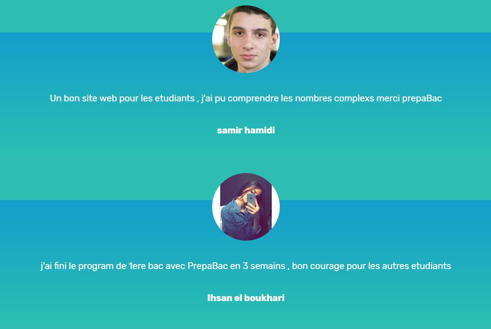
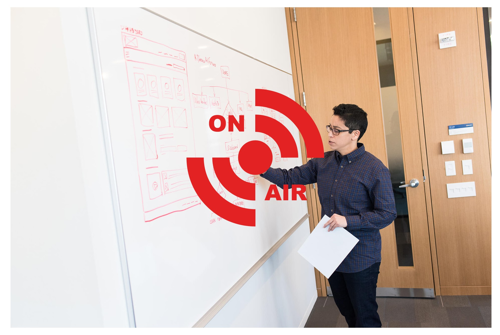

PRÉPARE LE BAC ET LE RÉGIONAL
Avec plus de 20 matières et 6 500 fiches de révisions, PrepaBac vous propose un contenu complet, de qualité et conforme au programme officiel du baccalauréat. Les fiches de révision concernent toutes les disciplines et épreuves : de l’histoire jusqu’à la physique-chimie en passant par la SVT.
+ de 6 500 fiches de révisions
Mathématiques

Géographie
Philosophie
Anglais

Diffusion en direct avec les meilleurs profs
Plus de 6 500 fiches de cours et 20 matières pour réviser votre baccalauréat et le réussir.
Entraînez-vous sur des sujets corrigés du bac : annales, sujets inédits… et accédez aux corrections pour améliorer votre niveau en maths, histoire-géo., sciences, etc.
Un dispositif en ligne d'exercices corrigés, une base documentaire de plus de 1 000 textes, cartes, graphiques et schémas dont une partie provient du CNRS, pour maîtriser vos sujets de bac !